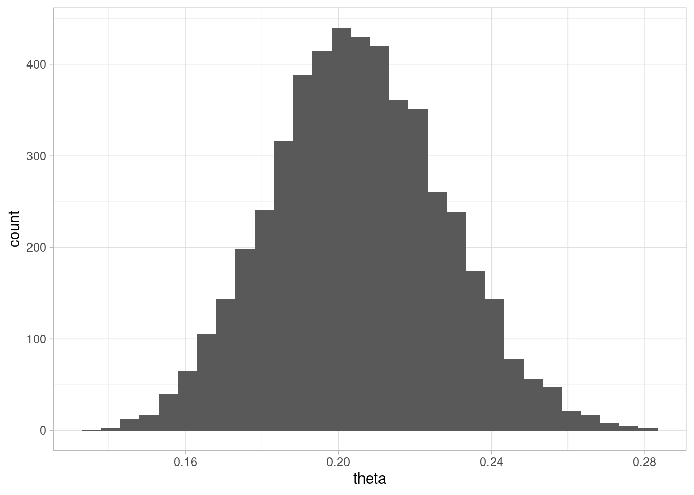
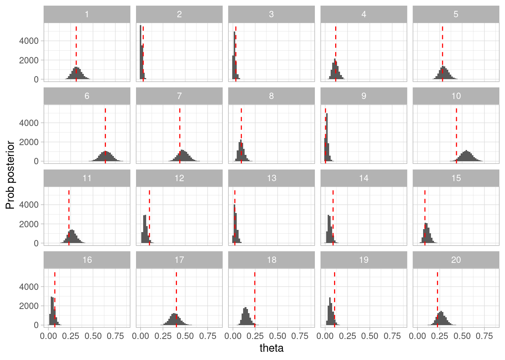
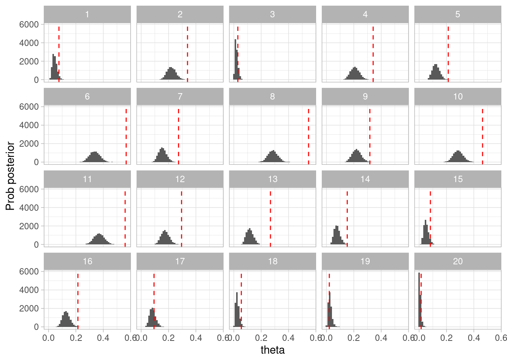
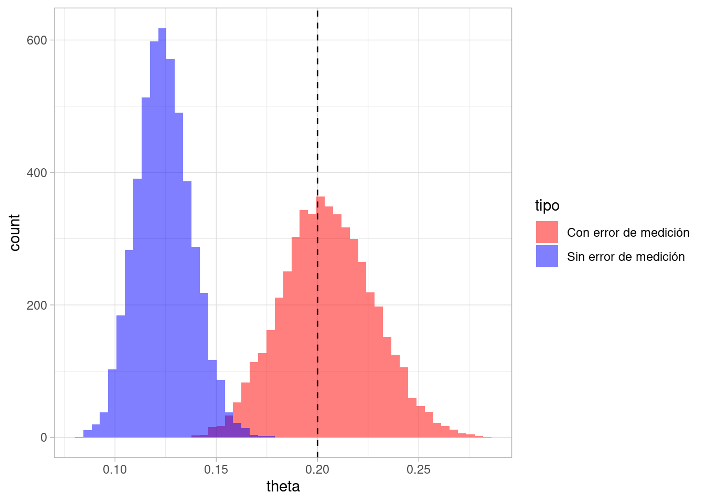
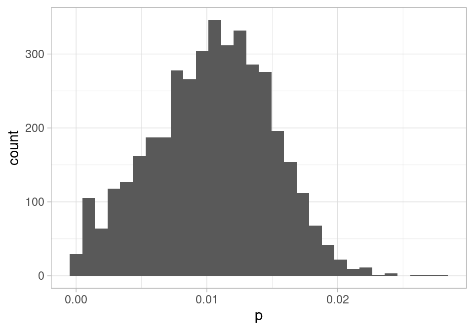
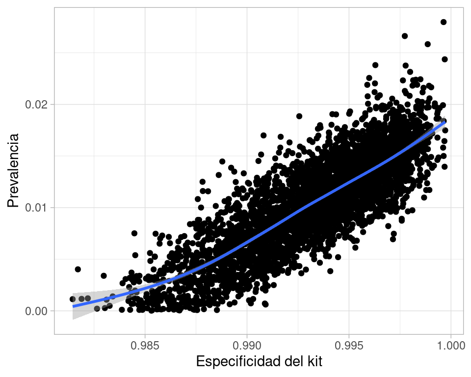

En esta parte veremos cómo continuaríamos refinando el modelo tomando en cuenta otros aspectos importantes del problema de estimar la seropositividad de una población.
El primer aspecto importante es persistir el seguir el flujo de trabajo. En segundo lugar, este ejemplo ilustra que la construcción de modelos preferiblemente se hace de manera iterativa: una vez que probamos nuestro código, entendemos cómo funciona nuesto modelo, podemos continuar agregando componentes para hacerlo más útil.
3.1 Prevalencia con error conocido
Nuestro ejemplo de la sección anterior es poco realista pues usualmente las pruebas que son utilizadas para medir la prevalencia no son perfectas. Bajo condiciones muy controladas, el perfil de desempeño de las pruebas se mide, obteniendo resultados son del siguiente tipo:
En pruebas de gold standard, el kit identificó correctamente como positivos a 103 de 122 personas infectadas, e identificó correctamente como negativos a 399 de 401 personas no infectadas.
Sin considerar la incertidumbre, esto implica que la prueba tiene una sensibilidad de 84% y una especificidad de 99.5%.
3.1.1 Paso 1: modelo generativo
Primero supondremos que estos porcentajes de error son fijos. Nuestro modelo que incluye el error de medición se como sigue:
Donde vemos ahora que el estado real de cada persona de la prueba es desconocido, aunque el resultado de la prueba depende de ese estado, y la cantidad de positivos que observamos es ahora \(N_{obs}\), que depende también de la sensibilidad y especificidad de la prueba.
Y para constuir el modelo generativo notamos que la probabilidad de que un individuo infectado salga positivo es \(\text{sens}\), y la probabilidad de que un individuo no infectado salga positivo es \((1-\text{esp})\). De este modo, el modelo generativo es:
sim_pos_neg <-function(theta =0.01, N =20, sens =0.84, esp =0.995) {# verdaderos positivos que capturamos en la muestra Pos_verdadero <-rbinom(N, 1, theta) Neg_verdadero <-1- Pos_verdadero# positivos observados en la muestra: si es positivo, calculamos# la probabilidad de que realmente sea positivo sim_tbl <-tibble(Pos_verdadero, Neg_verdadero) |>mutate(Pos =rbinom(N, 1, Pos_verdadero * sens + Neg_verdadero * (1-esp))) |>mutate(Neg =1- Pos)# Observaciones sim_tbl |>select(Pos, Neg)}
Hacemos unas pruebas:
set.seed(8212)sim_pos_neg(theta =0.3, N =1e7, sens =0.7, esp =1) |>pull(Pos) |>mean() |>round(4)
[1] 0.2099
sim_pos_neg(theta =0.3, N =1e7, sens =1, esp =1) |>pull(Pos) |>mean() |>round(4)
[1] 0.3001
3.1.2 Paso 2: cantidad a estimar
En este punto hay que tener cuidado, porque no queremos estimar la proporción de positivos potenciales en la población (pues la prueba es imperfecta), sino la proporción de verdaderos positivos en la población. Esta cantidad sigue siendo representada por \(\theta\) en nuestro modelo generativo.
3.1.3 Paso 3: modelo estadístico
El modelo estadístico es ahora diferente. Vamos a plantear primero \(p(D|\theta, sens, esp)\), que es la probabilidad de observar los datos \(D\) dado que \(\theta\) es el parámetro de interés, y \(sens\) y \(esp\) (que en este caso suponemos conocidos). Es fácil ver que la probabilidad de obtener un positivo ahora es:
Si llamamos a esta cantidad \(\theta_{obs}\), de forma que dada una muestra de 0’s y 1’s, tenemos que la verosimilitud de la muestra dada cada conjetura \(\theta\), y con \(sens\) y \(esp\) fijas, es:
\[p(D|\theta, sens, esp) = \theta_{obs}^{N_{+}}(1-\theta_{obs})^{N_{-}}\] Suponiendo que la distribución apriori de \(\theta\) es uniforme, tenemos entonces que la distribución posterior cumple:
\[p(\theta|D, sens, esp) \propto \theta_{obs}^{N_{+}}(1-\theta_{obs})^{N_{-}}\] donde \(\theta_{obs}\) está dada por la fórmula de arriba. Sustituyendo:
Esta posterior tiene la estructura de una distribución beta, pero es un poco más complicada. En este punto, utilizaremos una técnica que funciona para problemas chicos (de unos cuantos parámetros), y que consiste en hacer una aproximación discreta de la distribución posterior:
Método de aproximación de rejilla
Dividimos el intervalo \([0,1]\) en \(m\) partes iguales, y calculamos el valor de la expresión proporcional a la posterior en cada uno de estos intervalos (por ejemplo en los puntos medios).
Normalizamos estos valores para que sumen 1, y obtenemos una distribución discreta que aproxima la posterior.
Muestreamos de esta distribución discreta para obtener una muestra de la posterior.
Este método sólo es factible en modelos simples cuando hay solamente unos cuantos parámetros por estimar, pues su complejidad crece exponencialmente con el número de parámetros. Rara vez se usa en la práctica por esta razón.
Aquí implementamos esta técnica de aproximación por rejilla. Incluimos también una Beta(1,3) como a priori:
simular_posterior_error <-function(muestra, n, sens =1, esp =1){ theta <-seq(1e-12, 1-1e-12, by =0.0001) p_obs <- theta * sens + (1- theta) * (1- esp)# verosimilitud (en logaritmo) log_dens_sin_norm <-log(p_obs) *sum(muestra) +log(1-p_obs) * (length(muestra) -sum(muestra))# a priori log_dens_sin_norm <- log_dens_sin_norm +dbeta(theta, 1, 3, log =TRUE)# normalizar log_dens_norm <- log_dens_sin_norm -log_sum_exp(log_dens_sin_norm) densidad_post <-exp(log_dens_norm)tibble(theta =sample(theta, size = n, replace =TRUE, prob = densidad_post))}
Y ahora podemos ver cómo se ve la posterior:
set.seed(328)una_muestra <-sim_pos_neg(theta =0.2, N =600, sens =0.6, esp =0.999)mean(una_muestra$Pos)
`stat_bin()` using `bins = 30`. Pick better value with `binwidth`.

Ahora seguimos el flujo. Agregaremos la verificación a priori para entender si nuestro modelo recupera los parámetros.
set.seed(8112)simulacion_rep_error <-map_df(1:20, function(rep){# simular de la apriori theta_sim <-rbeta(1, 1, 3)# simular datos según modelo datos_sim <-sim_pos_neg(theta = theta_sim, N =150, sens =0.6, esp =0.999)# simulaciones montecarlo para la posterior posterior <-simular_posterior_error(datos_sim$Pos, 10000, sens =0.6, esp =0.999)# junta todo posterior |>mutate(n_sim =n()) |>mutate(rep = rep) |>mutate(theta_sim = theta_sim) })
Ahora usamos histogramas por ejemplo para mostrar cómo luce la posterior, y comparamos con los valores de la simulación:
ggplot(simulacion_rep_error, aes(x = theta)) +geom_histogram(bins =50) +labs(x ="theta", y ="Prob posterior") +geom_vline(aes(xintercept = theta_sim), color ="red", linetype ="dashed") +facet_wrap(~rep)

Figura 3.1: Verificación a priori
Contrasta con lo que pasaría si usaramos el modelo sin considerar fuentes de error:
set.seed(812)simulacion_rep <-map_df(1:20, function(rep){# simular de la apriori theta_sim <-rbeta(1, 1, 3)# simular datos según modelo datos_sim <-sim_pos_neg(theta = theta_sim, N =150, sens =0.6, esp =0.999)# simulaciones montecarlo para la posterior posterior <-simular_posterior_error(datos_sim$Pos, 10000, 1, 1)# junta todo posterior |>mutate(n_sim =n()) |>mutate(rep = rep) |>mutate(theta_sim = theta_sim) })
ggplot(simulacion_rep, aes(x = theta)) +geom_histogram(bins =50) +labs(x ="theta", y ="Prob posterior") +geom_vline(aes(xintercept = theta_sim), color ="red", linetype ="dashed") +facet_wrap(~rep)

Figura 3.2: Verificación a priori fallida (modelo incorrecto)
Este resultado está lejos de ser aceptable.
Comparamos esta densidad con lo que obtendríamos sin considerar el error de medición, con los mismos datos:
set.seed(8)sims_post <-simular_posterior_error(una_muestra$Pos, 5000, 1, 1)ambas_sims_tbl <- sims_post_error |>mutate(tipo ="Con error de medición") |>bind_rows(sims_post |>mutate(tipo ="Sin error de medición"))ambas_sims_tbl |>ggplot(aes(x = theta, fill = tipo)) +geom_histogram(position ="identity", alpha =0.5, bins =50) +scale_fill_manual(values =c("red", "blue")) +geom_vline(xintercept =0.2, linetype ="dashed", color ="black")

Y vemos que la diferencia entre las distribuciones es considerable. En primer lugar, la distribución con error de medición es más ancha (hay más incertidumbre). En segundo lugar, como estimador de el parámetro de interés, nuestro modelo que no considera el error parece dar estimaciones sesgadas hacia abajo. Esto es porque la prevalencia no es tan baja, y la sensibilidad de la prueba no es muy buena, de manera que con el modelo con error inferimos correctamente que hay más prevalencia que lo que indicaría la proporción de positivos en las pruebas.
Aunque este ejemplo es claro, prevalencia, sensibilidad y especificidad interactúan de maneras a veces poco intuitivas.
3.2 Prevalencia con datos de referencia
Ahora haremos un paso adicional: los valores de sensibilidad y especificidad generalmente no son conocidos con certeza, sino que son estimados a partir de una muestra de “estándar de oro”. En esta prueba particular, el kit identificó correctamente como positivos a 103 de 122 personas infectadas, e identificó correctamente como negativos a 399 de 401 personas no infectadas. Consideraremos 122 y 401 como tamaños de muestra fijos y conocidos (las personas fueron extraídas de otra población).
Denotamos como \(Ref\) a los datos de referencia de “estándar de oro”.
Usando argumentos como los del modelo original, las distribuciones de esp y sens son beta y podemos incorporarlas en la simulación de la posterior. Nuestra nueva función para simular el proceso generativo es:
sim_pos_neg <-function(p =0.01, N =20, pos_gold =c(103,122), neg_gold =c(399,401)) {# Simular especificidad y sensibilidad sens <-rbeta(1, pos_gold[1] +1, pos_gold[2] - pos_gold[1] +1) esp <-rbeta(1, neg_gold[1] +1, neg_gold[2] - neg_gold[1] +1)# verdaderos positivos que capturamos en la muestra Pos_verdadero <-rbinom(N, 1, p) Neg_verdadero <-1- Pos_verdadero# positivos observados en la muestra: si es positivo, calculamos# la probabilidad de que realmente sea positivo sim_tbl <-tibble(Pos_verdadero, Neg_verdadero) |>mutate(Pos =rbinom(N, 1, Pos_verdadero * sens + Neg_verdadero * (1-esp))) |>mutate(Neg =1- Pos)# Observaciones sim_tbl |>select(Pos, Neg)}
Considerando que tenemos tres parámetros, en este punto decidimos no hacer la aproximación de rejilla. Es posible hacer otro tipo de aproximaciones (por ejemplo cuadráticas), pero en lugar de esto veremos cómo lo haríamos con Stan. Más adelante discutiremos los algoritmos que Stan utiliza para simular de la posterior de modelos muy generales. Por el momento, notamos que está basado en un algoritmo de simulación MCMC (Markov Chain Montecarlo), que es el estándar para modelos que no son muy simples. Este ejemplo es para ilustrar cómo resolveríamos el problema más general, no es necesario que en este punto entiendas cómo funciona o los detalles de la implementación.
sims <- ajuste$draws(c("theta", "sens", "esp"), format ="df")resumen <- ajuste$summary(c("theta"))
resumen |>select(variable, mean, q5, q95)
# A tibble: 1 × 4
variable mean q5 q95
<chr> <dbl> <dbl> <dbl>
1 theta 0.0104 0.00243 0.0174
Y podemos graficar la posterior de la seroprevalencia:
ggplot(sims, aes(x = theta)) +geom_histogram()
`stat_bin()` using `bins = 30`. Pick better value with `binwidth`.

Y vemos que los datos son consistentes con el dato reportado por los autores (alrededor de 1.2%), pero que no podemos excluir valores de prevalencia muy bajos (por abajo de 0.3% por ejemplo). Por otro lado, también son consistentes valores muy altos de seroprevalencia, de manera que este estudio resultó ser poco informativo de la IFR del COVID.
Podemos hacer diagnósticos adicionales acerca de la razón de esta variabilidad alta, si graficamos la relación entre especificidad de la prueba y estimación de prevalencia:
ggplot(sims, aes(x = esp, y = theta)) +geom_point() +xlab("Especificidad del kit") +ylab("Prevalencia") +geom_smooth()
`geom_smooth()` using method = 'gam' and formula = 'y ~ s(x, bs = "cs")'

La asociación entre estas dos cantidades es interesante porque conceptualmente (y desde punto de vista del modelo), no hay relación entre estas dos variables: su asociación aparece porque son causas que compiten para explicar una observación.
Nótese que dada la prevalencia baja, la especificidad del kit es un factor importante para explicar la prevalencia observada, pero si no pensamos con cuidado podríamos concluir que los falsos positivos no deberían ser problema por que la especificidad para ser muy buena.
Y notamos que aún con una muestra relativamente grande, el rango de \(\theta\) es considerable: va desde valores cercanos a 0 hasta valores alrededor de 0.025-0.03.